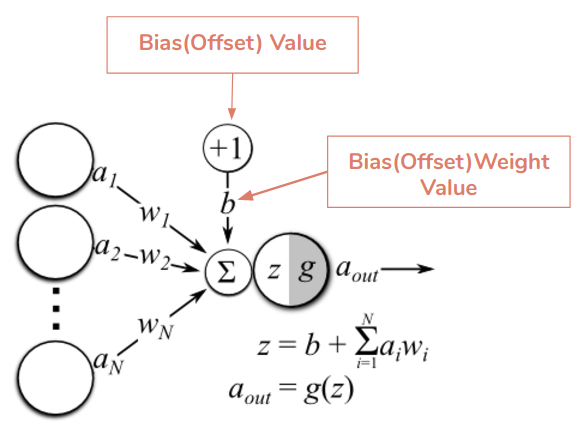

As someone who is interested in nordic skiing and computer science, a crossover episode was bound to happen. In this episode of Ross’s Revolutionary Radio™, we will explore how deep learning can be used to classify images and analyze my attempt to create a neural network model to classify pictures of nordic skiers.
What is Deep Learning?
In the field of artificial intelligence, deep learning is the practice of creating and training neural networks that can recognize and learn from patterns in data. Anything from natural language processing to colorizing grayscale images can be accomplished with deep learning. Deep learning can be used to create immensely accurate and intelligent models because it emulates the way that humans learn, but is not limited by capabilities of a human brain.
How do Neural Networks Work?
In artificial neural networks, neurons are arranged in layers in which every neuron is connected to each neuron in the next layer (Figure 1). The first and final layer is called the input and output layer respectively, while the middle layers are called the hidden layers. The connections between each neuron are called weights and each neuron has a value called a bias. This network of neurons as well as their weights and biases are saved into a file called the model.
 Figure 1
Figure 1
When data is input to the model, it traverses through the network in a motion called forward propagation. This is shown by the arrows in figure 1 where each neuron sends its value to all of the neurons in the next layer. This cycle continues until the signal reaches the output neuron which displays the result of the network given the inputs. The value of each neuron is calculated by adding the products of each neuron’s inputs and the weight of the connection to the neuron's bias value. (Figure 2)
 Figure 2Whether a neuron is activated or not depends on its value. Yet, regardless of whether the neuron activates or not, its value will be sent to all of the neurons in the next layer and the cycle will continue. When the signal reaches the output layer, the activation of the neurons in the output layer represents the output of the network. For example: if a network is trained to diagnose heart disease from an input of a patient’s symptoms, the output layer of the network will only have one neuron. The model’s predicted diagnosis of the patient is represented by the activation of this neuron.
How do Neural Networks Learn From Data?
Neural networks can recognize and learn from input data through a process called supervised learning. In supervised learning, a neutral network model is initialized with random weights and bias values. In the process of learning, these values are tweaked by an algorithm called backward propagation or backpropagation.
Neural network training is done in epochs which are like iterations of learning. During each epoch, the model will be exposed to a number of input data and its outputs will be recorded. At the end of each epoch the model will see how wrong its predictions were and adjust its weights and biases to better match the expected outcome.
The backpropagation algorithm is what calculates the error and adjusts the model at the end of each epoch. It first calculates the loss function of the model which is a numerical representation of the difference between the actual and expected output of the model. Then, based on how wrong the current model is, the algorithm will alter the values of the weights and biases of the hidden layers. A higher degree of error will result in more drastic changes to the values while lower degrees of error will cause the model to be adjusted only slightly.
My Attempt to Create an Image Classification Model
As much as I enjoy exploring the theory behind deep learning, I find its applications to be much more interesting. For this reason I attempted to create an image classification neural network model that could predict the team from which a Lake Conference nordic skier is from.
First of all, it is important to note that I did not create the entire architecture of the neural network myself. Instead, I used a code library called tensorflow, which is created and maintained by Google.
A code library is a collection of tools that one can use in their own projects. Tensorflow contains tools that can handle all of the complicated aspects of neural networks that only programmers with doctorates understand fully. I only ended up writing around 250 lines of code for this project, but the tools that I used from tensorflow are written in nearly 3 million lines of code. Therefore, I was able to focus on the interesting applications of deep learning, while leaving the complicated programming for the professionals.
Training image classification models from scratch is difficult and requires many thousands to millions of images. For this reason, many projects, my own included, simply fine-tune an already existing image classification model for their specific application.
For my model I decided to use the VGG16 image classification and detection model. The model was developed by the University of Oxford and beat out all competitors in a global image classification contest in 2016. It is trained with over 14 million images and it can detect over 1000 unique objects. My goal was to simply adjust the final layer of the network such that instead of detecting thousands of classes, it would only need to detect five: Minnetonka, Eden Prairie, Edina, Wayzata and Hopkins.
To train the model, I locked all of the layers of the VGG16 model except the last one. This meant that backpropagation could not alter the weights and biases of all but the last layer. Thus, my new model would harness the object detection and classification abilities of the powerful VGG16 model and use it to differentiate between the 5 Lake Conference teams.
Creating the Model
My project consisted of five parts: data collection, data preprocessing, model programming, model training and model validation.
Collecting Data
This part of the project was by far the most time consuming part. I needed thousands of images for each of the five classes. In addition, I needed to hand-select each image to make sure that none of them had anyone of a different team in the image. Furthermore, I needed to maintain a healthy variation of images to make sure that my model was apt at identifying a wide range of images.
Data Pre Processing
Data preprocessing is the process of augmenting the input images to artificially create randomness in the data. This is very important for my model because a lot of the input data looks very similar. This is due to the fact that many of the images were taken by a stationary photographer and so the perspective of the image and pose of the skier is very similar in many of the images. Data preprocessing helps prevent the neural network from becoming too familiar with the test data because it can lead to overfitting.
Model overfitting occurs when the model begins to form a relationship between things that are not necessarily indicative of changes in the variables that are tested. Take for example a scenario where two photographers, one from Edina and one from Minnetonka, photograph the same race. Each photographer only takes pictures of racers from their team. The Edina photographer has a slight tilt in their tripod that each image is a bit tilted relative to the ground. When the data is used to train the data, the model could start to recognize that a tilt of a certain degree is an indication that a given image is of an Edina skier. This is an example of overfitting because the model is drawing a connection between the skier and camera angle that is not a true indication of the skier’s team. Preprocessing the data with random rotations would alleviate model overfitting from the camera tilt.
Some of the things that I did to process my images was to randomly zoom, flip, and rotate them. Since many of my images were near duplicates of each other, this preprocessing helped reduce the possibility of model overfitting.
Training and Validating the Model
It was surprisingly easy to implement the training and validation algorithm. All of my training data was organized into separate folders, such that each folder contained all the images for a team. The Minnetonka folder had all the images of Minnetonka racers and so on. My code simply calls the training algorithm from tensorflow to use the data in my organized folders to train the model. Once the model has been trained, I run a tensorflow validation algorithm on the separate validation data and output the final accuracy of my model.
Reflection
Although I was not able to complete the image classification model, I learned a lot about how neural networks are structured as well as how to implement code from tensorflow into a custom program. One of the biggest challenges to the creation of a working prototype is my lack of experience with coding deep learning algorithms as well as coding in Python. In the end, I came very close to creating a working prototype, but unfortunately there were many errors during training that I did not have time to fix. I am looking forward to completing this project at a later date, but in the meantime I am content with how much I have learned from this experience.
Sources and Further Reading
Neural network research:
- https://ieeexplore.ieee.org/abstract/document/8308186/
- https://arxiv.org/abs/1511.08458
- https://towardsdatascience.com/classify-butterfly-images-with-deep-learning-in-keras-b3101fe0f98
- https://www.sciencedirect.com/science/article/pii/S0957417417303627
- https://www.sciencedirect.com/science/article/pii/S0026265X07001403
- https://deeplearning.lipingyang.org/wp-content/uploads/2016/12/Building-powerful-image-classification-models-using-very-little-data.pdf
- https://www.codesofinterest.com/2017/08/bottleneck-features-multi-class-classification-keras.html
- https://gist.github.com/echen/2b6ffa9b1f461698cce537e694e451f8
- https://medium.com/learning-machine-learning/multi-class-fish-classification-from-images-with-transfer-learning-using-keras-335125637544
- https://neurohive.io/en/popular-networks/vgg16/
Images:
- https://www.tonkanordic.org/tnr-photos
- https://www.tonkanordic.org/tnr-photos
- https://edenprairienordicski.shutterfly.com/pictures/16036
- https://www.wayzatanordic.com/photos
- http://www.hopkinsnordic.com/photo-sites
Posted by Ross Volkov · Images by Google Images